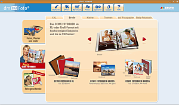
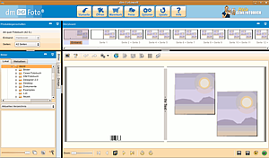

dm DIGI Foto
Dieser Artikel wurde für die folgenden Ubuntu-Versionen getestet:
Ubuntu 17.10 Artful Aardvark
Ubuntu 16.04 Xenial Xerus
Ubuntu 14.04 Trusty Tahr
Zum Verständnis dieses Artikels sind folgende Seiten hilfreich:
dm DIGI Foto - CEWE Fotobuch  ermöglicht die native Erstellung eines Fotobuchs und anderer Produkte (Fotokalender, Puzzle, Poster, etc.)unter Linux. Mit Hilfe dieser Software lassen sich Fotobücher in diversen Größen, Farben und anderen Gestaltungselementen bequem und individuell gestalten und anschließend über das Internet bestellen. Diverse Layouts und viele Gestaltungsoptionen helfen bei der Erstellung des Fotobuchs.
ermöglicht die native Erstellung eines Fotobuchs und anderer Produkte (Fotokalender, Puzzle, Poster, etc.)unter Linux. Mit Hilfe dieser Software lassen sich Fotobücher in diversen Größen, Farben und anderen Gestaltungselementen bequem und individuell gestalten und anschließend über das Internet bestellen. Diverse Layouts und viele Gestaltungsoptionen helfen bei der Erstellung des Fotobuchs.
Die Firma CEWE produziert die Software für Fotobücher auch für diverse andere Drogerien und Discounter. Die verschiedenen Programme unterscheiden sich aber in den angebotenen Funktionen und im Aussehen. Das hier beschriebene Programm ist speziell für die Drogeriemarktkette dm bestimmt.
Die Beschreibung funktioniert jedoch ebenfalls für die Original-Software der Firma CEWE. Auch auf http://www.cewe-fotobuch.de/ kann eine Linux-Version heruntergeladen und installiert werden.
Hinweis:
Das Angebot der Online-Bestellung eines Fotobuchs richtet sich ausdrücklich an Besitzer eines DSL-Anschlusses mit Flatrate. Allein zur Installation des Programms müssen schon knapp 150 MB an Daten heruntergeladen werden. Auch beim Hochladen eines fertigen Fotobuchs können beträchtliche Datenmengen zusammen kommen. Dies sollten insbesondere Modem- und ISDN-Nutzer berücksichtigen.
Installation¶
Man lädt die Datei setup_dm_Fotowelt.tgz von dm DIGI Foto (oder direkt von CEWE ) herunter und entpackt [3] diese im Homeverzeichnis. Nun wird im entpackten Ordner das Installationsskript install.pl im Terminal [2] ausgeführt:
./install.pl # Für die Installation in das Homeverzeichnis sudo ./install.pl # Für die Installation in ein Systemverzeichnis, also bspw. /opt
Hinweis!
Fremdsoftware kann das System gefährden.
Nach dem Start des Skripts wird man aufgefordert, die Lizenzbedingungen zu lesen (beenden mit Q ) und zu akzeptieren. Anschließend wird nach dem Installationspfad gefragt. Der Hersteller gibt vor, das Programm in das eigene Homeverzeichnis zu installieren. Die Dateien finden sich dann im Ordner DM. Führt man die Installationsroutine mit Root-Rechten [5] aus, so kann man das Programm bspw. nach /opt installieren und es so allen Benutzern des Systems zur Verfügung stellen.
Im nächsten Schritt wird gefragt, ob die Dateien aus dem Internet heruntergeladen werden sollen. Da die benötigten Dateien über das Internet in das Homeverzeichnis installiert werden, entfällt der Weg über die Paketverwaltung. Das Skript informiert über den Fortschritt des Downloads:
Für die Installation müssen noch folgenden Pakete aus dem Internet herunter geladen werden: - 64-Bit-Executable [1.85 MB] - Linux 64-Bit Libraries [82.04 MB] - Resources [26.62 MB] - Startscreen [25.63 MB] - Photofun [15.75 MB] - Decorations [15.40 MB] - Background [17.55 MB] - SVGCalendars [18.43 MB] - SVGTemplates [14.89 MB] Wollen Sie die Installation fortsetzen und die benötigten Daten, insgesamt 218.16 MB, aus dem Internet herunterladen? [JA/nein]
Nach Abschluss des Downloads kann man das Programm starten, indem im Installationsordner die Datei dm Fotowelt ausgeführt wird. Alternativ kann eine Verknüpfung auf dem Desktop oder ein Eintrag in das Ubuntu-Anwendungsmenü [4] angelegt werden.
Hinweis:
Für 64-bit-Systeme müssen ggf. zusätzliche Pakete installiert werden (siehe 64-bit-Probleme).
Eintrag in das Startmenü¶
Bei der Installation wird kein Eintrag in das Startmenü erstellt. Stattdessen liegt nur eine .desktop-Datei auf dem Desktop, die man zum Starten des Programms nutzen kann. Man kann diese verwenden, um einen Eintrag in das Startmenü erstellen zu lassen. Dazu kopiert man die Datei mittels
sudo cp ~/Desktop/dm\ Fotowelt.desktop /usr/share/applications/dm_fotowelt.desktop
nach /usr/share/applications und fügt mit einem Editor mit Root-Rechten die Zeile
Categories=Graphics;RasterGraphics;
in die kopierte Datei ein. Dann erscheint das Programm automatisch für jeden Benutzer des System unter "Anwendungen -> Grafik".
Für CEWE MEIN FOTOBUCH erstellt man mit einem Texteditor [4] und Administratorrechten für grafische Programme eine Datei /usr/share/applications/cewe.desktop:
[Desktop Entry] Name=CEWE Fotobuchservice Terminal=false X-MultipleArgs=false Type=Application Comment=Ein Fotobuch erstellen Exec="/opt/CEWE COLOR/MEIN CEWE FOTOBUCH/Mein CEWE FOTOBUCH" Categories=Graphics; Icon=/opt/CEWE COLOR/MEIN CEWE FOTOBUCH/Resources/icons/quality/seal.png
Wenn die Installation lediglich für das Home-Verzeichnis erstellt wurde, müssen die Pfade angepasst werden.
Aussehen¶

Die Software wird durch einen  -Klick auf die Datei dm Fotowelt geöffnet. Nach einer kurzen Ladezeit öffnet sich ein Startfenster. Dieses Fenster gliedert sich grob in vier Bereiche. Im linken Bereich befindet sich eine Produktübersicht. Dort kann man das gewünschte Produkt auswählen, z.B. kann man zwischen den Kategorien "Fotos, Poster und mehr", "Mein Cewe Fotobuch" und "Fotogeschenke ( mit Kalendern)" wählen. Mit einem Klick auf ein Produkt wird in der Mitte des Fensters eine Auswahl von Optionen geladen. Dort kann man wählen, welche Größe das Produkt haben soll (bspw. bei Fotobüchern) oder welches Unterprodukt man haben möchte (bspw. Fotogeschenke -> Puzzle).
-Klick auf die Datei dm Fotowelt geöffnet. Nach einer kurzen Ladezeit öffnet sich ein Startfenster. Dieses Fenster gliedert sich grob in vier Bereiche. Im linken Bereich befindet sich eine Produktübersicht. Dort kann man das gewünschte Produkt auswählen, z.B. kann man zwischen den Kategorien "Fotos, Poster und mehr", "Mein Cewe Fotobuch" und "Fotogeschenke ( mit Kalendern)" wählen. Mit einem Klick auf ein Produkt wird in der Mitte des Fensters eine Auswahl von Optionen geladen. Dort kann man wählen, welche Größe das Produkt haben soll (bspw. bei Fotobüchern) oder welches Unterprodukt man haben möchte (bspw. Fotogeschenke -> Puzzle).
Am oberen Rand befinden sich Reiter, mit denen man weitere Optionen zu den Produkten (bspw. "Fotogeschenke -> Topseller") erhält. Über den Reitern ist eine Menüleiste angebracht. Von dort aus kann man zur Startseite des Programms zurückkehren, eine gespeicherte "Datei öffnen", den "Warenkorb" durchsuchen und sich die aktuellen "Preise" anzeigen lassen. Eine "Updatefunktion" und die "Hilfe" ergänzen die Menüleiste. Die Menüleiste bleibt auch im Produkteditor erhalten.
Benutzung¶
 Nachdem ein Produkt ausgewählt wurde, öffnet sich ein "Assistent", der einem die Erstellung erleichtert. Man kann aber auch ohne den "Assistenten" arbeiten. Durch Klicken des Knopfs "Fotobuch ohne Assistenten erstellen" öffnet sich ein Editor, in dem man sein Produkt bearbeiten kann. Im Folgenden wird die Erstellung eines Fotobuches erläutert. Einige der hier beschriebenen Funktionen lassen sich auch bei der Erstellung anderer Produkte finden.
Erstellt man ein Fotobuch ohne den Assistenten, bietet der Fotobucheditor zahlreiche Möglichkeiten zur Bearbeitung. Er gliedert sich dabei in fünf Bereiche. Die große Fläche im Fenster zeigt den "Arbeitsbereich", eine Doppelseite, die gerade bearbeitet wird. Dort sind bereits Rahmen für Fotos vorgegeben. Man kann diese löschen, verschieben, in der Größe ändern oder neu hinzufügen. Im oberen linken Bereich können "Produkteigenschaften" geändert werden (welcher Einband, wie viele Seiten). Direkt darunter befindet sich ein Bereich, in dem man das "gewünschte Verzeichnis" von Foto-Ordnern auswählen kann. Die dort befindlichen Fotos werden im Feld unterhalb angezeigt. Sie können per Drag & Drop in den Arbeitsbereich gezogen werden. Dort kann man auch per Reiter zwischen Bildern, Layout und Design wählen.
Im rechten oberen Bereich befindet sich eine Übersicht der bisher gestalteten Seiten. Durch -Klick auf die entsprechende Doppelseite wird sie in den Arbeitsbereich geladen. Im Arbeitsbereich befinden sich zwei Leisten. Die obere dient dem Bearbeiten des Inhaltes (Bilder/Texte einfügen, Layout bearbeiten etc.). Die untere Leiste dient dem Betrachten des Fotobuches (letzte/nächste Seite anzeigen, Vollbildansicht etc.) und der Verwaltung des Fotobuchs (Speichern (unter), in den Warenkorb legen, etc.).
Deinstallation¶
Möchte man das Programm wieder deinstallieren, so löscht man einfach im Homeverzeichnis den Ordner DM.
Problembehebung¶
Programmstart¶
Falls der Start des Programms scheitert, kann es an Leerzeichen im Namen des Installationsordners oder im Programmnamen selbst liegen. Dies lässt sich korrigieren, wenn man die Leerzeichen durch Anführungszeichen maskiert. Beispiel: der Programmaufruf wird von
./dm/dm Fotowelt/dm Fotowelt
in
"./dm/dm Fotowelt/dm Fotowelt"
abgewandelt. Diese Änderung nimmt man am besten direkt in der entsprechenden .desktop-Datei vor.
Das Scheitern des Programmstarts bei 64-bit-Systemen kann auch an fehlenden Bibliotheken liegen (siehe unten).
Automatische Aktualisierung¶
Falls die automatische Aktualisierung des Programms nicht funktionieren sollte, kann man sich die jeweils neue Version manuell herunterladen und neben der älteren Version betreiben. Es ist nur darauf zu achten, dass der Ordner, in dem die neue Version liegt und eventuelle Verknüpfungen entsprechend umbenannt werden. So kann man auch testen, ob sich die Nutzung der jeweils neuen Version auch wirklich lohnt.
Falls die Fotobücher gesichert werden sollen, ist dies sehr einfach möglich. In dem Verzeichnis, wo das Fotobuch gespeichert ist, sollten neben den Fotos auch eine XML-Datei liegen. Diese XML-Datei stellt das Fotobuch dar, natürlich nur in Verbindung mit den Fotos. Man muss nur den Ordner mit der XML-Datei und den dazugehörigen Fotos sichern.
fehlendes Paket bei automatischer Aktualisierung¶
Falls sich nach einer automatischen Aktualisierung das Fotobuchprogramm nicht mehr starten lässt (keine Reaktion beim Klick auf das Programmsymbol), sollte man das Programm im Terminal starten. Sieht man dort eine Fehlermeldung zur fehlenden Bibliothek libva.so.1, so kann man diese ganz einfach aus den Paketquellen nachinstallieren:
libva1
 mit apturl
mit apturl
Paketliste zum Kopieren:
sudo apt-get install libva1
sudo aptitude install libva1
Danach lässt sich dm DIGI Foto ganz normal starten.
64-bit-Probleme¶
Fehlende Pakete in Ubuntu 16.04¶
In Ubuntu 16.04 fehlen zwei Pakete, ohne die das Programm nicht startet. Die können einfach nachinstalliert werden:
libgstreamer0.10-0
libgstreamer-plugins-base0.10-0
mit apturl
Paketliste zum Kopieren:
sudo apt-get install libgstreamer0.10-0 libgstreamer-plugins-base0.10-0
sudo aptitude install libgstreamer0.10-0 libgstreamer-plugins-base0.10-0
Danach lässt sich die Fotobuch-Software starten.
Links¶
dm-DIGI-Foto
- liefert die FotobücherCEWE Fotobuch
- Hersteller der Softwaredm-Fotobuch unter Linux
- Blogbeitrag, 01/2012Fotobuch
 Übersichtsartikel
Übersichtsartikel
- Erstellt mit Inyoka
-
 2004 – 2017 ubuntuusers.de • Einige Rechte vorbehalten
2004 – 2017 ubuntuusers.de • Einige Rechte vorbehalten
Lizenz • Kontakt • Datenschutz • Impressum • Serverstatus -
Serverhousing gespendet von